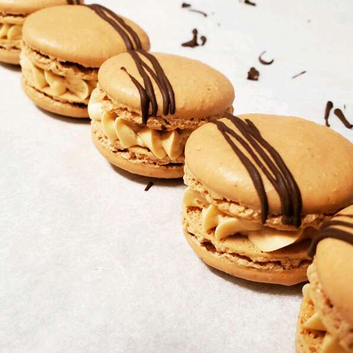

French Macarons

Description
These cookies are a labor of love and we did a lot of research to perfect this recipe for you, after our own failures.
Please follow as written and you will have a delicious and well-presented cookie. You may wish to experiment with different fillings. Enjoy!
Ingredients:
Macarons:
- 3 extra-large egg whites
- 1/3 cup white sugar
- 1 & 2/3 cups confectioners' sugar
- 1 cup almond flour
- 1 pinch salt
Buttercream Filling:
- 1/2 cup butter, softened
- 2/3 cup confectioners' sugar
- 1/2 teaspoon vanilla extract
Steps:
- Preheat oven to 300 degrees F (150 degrees C). Line a baking sheet with parchment paper.
- Beat egg whites in a glass, metal, or ceramic bowl with an electric mixer on medium speed until foamy, about 30 seconds.
Add white sugar and continue to beat until peaks are stiff enough they stay in place when the bowl is turned upside down, about 5 minutes.
- Sift 1 2/3 cup confectioners' sugar, almond flour, and salt together twice. Fold into the egg whites until batter is creamy
and falls slowly off the lifted spatula, about 50 turns with a spatula. Transfer batter to a piping bag fitted with a round tip.
- Pipe batter onto the parchment paper, using a circular motion to make macarons 1 inch in diameter.
Tap the baking sheet against the counter about 10 times to release any air bubbles.
- Bake in the preheated oven for 9 minutes. Rotate baking sheet and continue baking until macarons are shiny and rise slightly to form "feet", about 9 minutes more.
Peel off the parchment paper and allow to cool completely, about 30 minutes.
- Beat butter, 2/3 cup confectioners' sugar, and vanilla extract with an electric mixer until creamy and thick, about 10 minutes.
Transfer filling to a piping bag fitted with a round tip.
- Pipe a small amount of filling onto the center of 1 macaron; top with another macaron and press gently to sandwich the filling between the two.
Cook's Notes:
To ensure macarons are the same size, you can trace 1-inch circles with a pencil on parchment paper, then flip the paper and use the circles as a guide when piping.
If you want to dye the macaron batter, add food coloring to egg whites in step 2; make the mixture a few shades darker than desired as baking will lighten the color.
Use colors in powders or gel form - liquid food coloring may add too much moisture to the egg mixture and change the consistency.
Make sure you bake only 1 baking sheet at a time.
If you want to dye the buttercream filling, add to the butter mixture in step 6.
previous recipe | next recipe